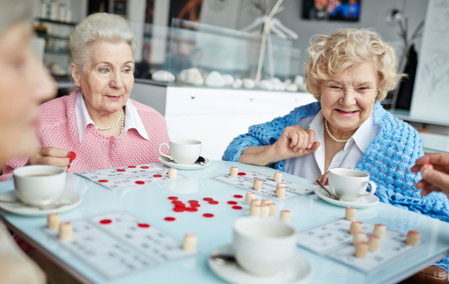

Фотографии пансионата


Наш частный дом престарелых гарантирует оптимальные условия проживания для людей с различными видами нарушений. В стенах пансионата с медицинским уходом комфортно чувствуют себя и постояльцы, способные самостоятельно передвигаться, и те, кто не может ничего сделать без посторонней помощи.
Основное направление нашей деятельности – уход за пожилыми людьми (женщинами старше 55 лет и мужчинами старше 60 лет). Мы также принимаем пациентов более молодого возраста (с 18 лет), если им установлена первая/вторая группа инвалидности и они нуждаются в регулярном медицинском уходе.
Основное направление нашей деятельности – уход за пожилыми людьми (женщинами старше 55 лет и мужчинами старше 60 лет). Мы также принимаем пациентов более молодого возраста (с 18 лет), если им установлена первая/вторая группа инвалидности и они нуждаются в регулярном медицинском уходе.
Основное направление нашей деятельности – уход за пожилыми людьми (женщинами старше 55 лет и мужчинами старше 60 лет). Мы также принимаем пациентов более молодого возраста (с 18 лет), если им установлена первая/вторая группа инвалидности и они нуждаются в регулярном медицинском уходе.
Основное направление нашей деятельности – уход за пожилыми людьми (женщинами старше 55 лет и мужчинами старше 60 лет). Мы также принимаем пациентов более молодого возраста (с 18 лет), если им установлена первая/вторая группа инвалидности и они нуждаются в регулярном медицинском уходе.
Основное направление нашей деятельности – уход за пожилыми людьми (женщинами старше 55 лет и мужчинами старше 60 лет). Мы также принимаем пациентов более молодого возраста (с 18 лет), если им установлена первая/вторая группа инвалидности и они нуждаются в регулярном медицинском уходе.
В преклонном возрасте люди особенно нуждаются в общении и заботе, но родные не всегда могут окружить их должным вниманием. Платный дом престарелых «Тульский Дедушка» всегда готов принять одиноких стариков из Московской и Тульской областей. Мы не можем заменить полноценную семью, но готовы окружить теплом и заботой каждого человека, достигшего пенсионного возраста. Также мы предоставляем помощь медперсонала.
Пансионат для престарелых готов принять людей на постоянное или временное проживание. Мы гарантируем внимательное отношение и постоянную заботу о каждом своем госте. Частный пансионат для пожилых людей – это лучший способ обеспечить старикам полноценные условия проживания и спокойную старость.
Комфортная атмосфера, возможность общаться с персоналом и другими постояльцами способствуют сохранению интереса к жизни, несмотря на годы и жизненные ситуации. Пансионат для стариков – это новая и интересная жизнь, а также возможность чувствовать себя нужным.
Наш персонал – это разные специалисты, прошедшие специальное обучение. В их задачи наряду с заботой о стариках и проведением медицинских процедур входит обеспечение удовлетворительного физического и эмоционального состояния наших гостей.
Записаться на оформление в частный дом престарелых можно в офисе в Туле или заполнив форму.
Мы приглашаем в наш офис в Туле всех, кто хочет обеспечить своим близким достойную старость. На сайте предусмотрена возможность записаться на оформление в наш частный дом престарелых. Получить ответы на интересующие вопросы относительно условий проживания в доме для пенсионеров, оплаты и требуемых документов, можно позвонив по телефону 8 (4872) 44-04-80.